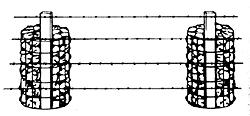

Down-Home Country Lore
Daniel Warner uses an air pump to separate meat from the bone in hunted animals; Doug Quail throws chicken feed around fencing to let the fowl pick weeds for him; Eileen Jingo recycles sunflower stalks to support string beans; Badger Stator reports sunflower stalks make great shepherds' staffs in Christmas pageants; Linda Biracial grows seaweed to feed to her goldfish; Mrs. Dennis Austin plans city travel by laminating a map and drawing her route with a grease pencil; D. Leverets says a dry ballpoint pen works well on carbon paper; David Ennis shares a honey candy recipe; Gale Flag uses a cotton cloth and liquid lecithin instead of no stick spray; Charles Craig makes his own reflective pet collars; Nancy Perry uses rocks to support fence posts; wine vinegar can be used to eliminate tobacco and other household odors according to Shirley McHenry; Tom Kennedy finds vinegar handy when patching concrete; Billie Durham dashes vegetables with vinegar instead of butter and salt; tire inner tubes can be recycled as water hoses, gaskets and a variety of other purposes; Fran Beckon saves money by having everyone in the family use the same natural shampoo; Every Love grows tomatoes upside down in a bucket; Zen Colterjohn wraps fragile gifts in disposable diapers for shipping; Nancy Piccioni-Hann found masonry wire supports make excellent frames for beans and grapes in the garden; Joseph J. Stearn drops an alcohol/vinegar mixture in his ears to prevent infection after swimming; Dixie McCullough trades her worn vegetable peeler to a friend who uses the opposite hand; Ray Anderson rubs crushed garlic on his feet to keep them dry; David Byrd sprinkles borax in his shoes to prevent athlete's foot; Janis Simmons traps fleas in petroleum jelly; Dennis and Donna Cheathem bath their dogs in crushed pennyroyal leaves to prevent fleas; Emma Minors keeps her plants healthy by pouring water leftover from boiling eggs in the pots; Patricia Vought brews tea in the sun in two-gallon glass condiment jars she gathers from restaurants.
by Mother Earth News readers
July/August 1983
According to "50% self-sufficient" Daniel Warner of Walton, New York, there's more than one way to skin a small animal. In order to better define the boundary between a recently killed specimen's hide and its flesh, Daniel makes one small hole in the skin right above the quarry's hind foot. He then inserts a ball needle (attached to a hand pump) just under the skin, and begins pumping in air. The carcass puffs up like a balloon . . . separating most of the hide from the meat. Warner next pats the hide, working air into any area that still adheres to the flesh.
At that point, the Empire Stater begins cutting around the animal's legs and across to the anus. Then, when Daniel does peel the hide, it comes off easily, and the connective tissue remains clearly visible . . . enabling him to make cuts that insure that the maximum amount of meat stays on the carcass and off the hide.
If you own chickens, Doug Qualls's tip may be mighty helpful to you. This resident of Apple Valley, California avoids the boring chore of hoeing the weeds along his fences by throwing chicken scratch along the line of his posts. Doug's feathered "fence crew" then digs in after the feed . . . pulling up weeds as they go!
Save those sunflower stalks! Eileen Janigo of Wittenberg, Wisconsin does . . . and finds them quite handy for supporting pole beans, lima beans, peas, morning glories, and other climbing crops or flowers in her garden. And you don't even have to wait until spring to use the stalks . . . the Badger Stater says they also make great shepherds' staffs for Christmas pageants!
Linda Bisaccia treats her pet goldfish to her own homegrown seaweed. Here's how she does it. The last time Linda purchased some elodea plants at the pet shop (which was quite a while ago by now), she bought an extra bunch and placed it and a few snails in a glass jug of water. Ms. Bisaccia set the container in a sunny spot among her indoor greenery, and then sat back to watch the seaweed grow. The Thurmont, Maryland reader says that regular thinning of the underwater crop provides an ample supply of seaweed for her feasting fish. What's more, she gets to enjoy watching beautiful chains of silvery oxygen bubbles float up from her sunlit plants . . . and, when Linda changes the water in the jug from time to time, she brightens up drooping houseplants with the fertilized liquid!
"My husband and I own and operate a secondhand store, and therefore rely on garage sales for a considerable por tion of our merchandise," writes Mrs. Dennis Austin of Medicine Park, Oklahoma. "However, we found that running about to 30 or more different sales in one day can be extremely nerve racking, especially since we're newcomers and unsure of the directions around the city.
"So we came up with a device that keeps us sane and delivers us to the sales quickly enough to get hold of the real bargains. First, we obtained a city map from the local fire department. We then trimmed the chart to size before gluing it to a piece of cardboard. Next, we stuck the guide's list of street names and their locations on the back of the cardboard, and had both sides laminated in plastic at the dime store.
"Now, when the garage sale ads appear, we mark the location of each on the map with a grease pencil . . . and plot our route. This saves us time, gasoline, and frustration. And we can reuse the map simply by wiping off the grease-pencil markings with a cloth!"
Got a good-for-nothing ball point pen? Turn it into a useful implement by taking this suggestion from D. Leverette of Fairfield, Florida: "A tip for those readers who keep notebooks on various subjects for easy reference and would like to add diagrams to their records-is to take a dry ball point pen and a piece of carbon paper, place the carbon underneath an original sketch, and trace over the work. Presto! You've got a copy to put with your notes so that you can refer to it quickly when you're in the fields."
David Eniss is so impressed with his wife's Honey Candy recipe that he decided he'd like to share it with all of MOTHER's readers. The La Belle, Floridian says this dessert/snack is delicious, nutritious, and oh so-easy to make.
Mix together in a pan 1 stick of margarine, 3/4 cup of honey, 3/4 cup of milk, and 3 tablespoons of cocoa or carob powder. Boil this mixture for about 3 minutes, stirring it constantly, and then remove the pan from the heat. Next, add 3/4 to 1 cup of crunchy peanut butter and 3 cups (more or less, according to your taste) of oats. Spread the hot honey candy on a tray or plate and allow it to cool. Then cut it into squares and enjoy!
"No stick" pan spray is expensive to buy, and usually comes in resource wasting aerosol cans, to boot. How can you obtain the benefits this product offers without incurring its costs? Just take this suggestion from Gale L. Flag of Fort Kent, Maine. She keeps a small cotton cloth in a plastic container along with 1/2 teaspoon of liquid leci thin-for wiping all of her pots, cake pans, bread pans, cookie sheets, and broilers before she uses them. A little goes a long way, she adds, so keep the coating very thin.
Charles Craig avoids purchasing those high-priced, commercially produced reflective pet collars by making his own. Charles and his wife, who reside in Tallahassee, Florida, purchased some reflective tape that can be sewn on clothing. They found a remnant of the fluorescent green material on sale at a fabric store for 50d and took it home. After measuring each cat's neck, they stapled the ends of the cut to-fit tapes together and slipped them over the pets' heads. Thus, the Craigs can help protect their night prowling felines at a fraction of the cost of commercial collars.
Nancy Perry considered the many rocks on her 13 acres in Shady Cove, Oregon a solution instead of a problem. When she needed a fence, she neatly stacked the rocks around a pole held at the inside edge of a 24-inchdiameter cylindrical "cage" made from old wire fencing. That way, Ms. Perry could put fenceposts right where she wanted them, without digging holes. After six months, Nancy happily reports that her Holstein has yet to knock one over!
AND YOU THOUGHT YOU'D HEARD IT ALL DEPARTMENT: Yep, there are three more good uses for that ever-popular, ever-versatile white vinegar. First, Shirley McHenry of California, Missouri removes tobacco and other household odors from her living quarters by placing a small brandy snifter half filled with the potent liquid in the room needing to be freshened. Shirley likes to also drop a colorful artificial flower in the glass, adding a festive touch to the room while clearing the air.
Second, Tom Kennedy of Mishicot, Wisconsin finds that vinegar comes in handy when he patches concrete. Tom splashes the old cement with the acid before applying the new ... and swears that the vinegar makes the new mix adhere tightly to the old.
Third, Billie Durham of North East, Maryland eliminates the need for salt or butter on her vegetables by accenting them with a dash of wine- or herb. flavored vinegar.
Hold on there! Were you just about to junk those old automobile and bicycle tire tubes? You'd be wasting recyclable material, say ingenious MOTHER-readers, who write that discarded inner tubes can be cut to make short, flexible water hoses . . . substitute gaskets . . . tool-handle wraps to reduce vibration and to keep the grips warm to the touch . . . patches for the soles of running shoes with worn tread . . . quick repairs for cracked pipes and hoses (when stretched tightly around the damaged area) ... windshield wiper blade replacements for those whose hands are steady enough to slice straight-edged strips from the rubber . . . hinges for gates, boxes, and lids . . . shims to increase the diameter of a pipe or hose so that it fits snugly inside another . . . grip pads to help loosen jar lids that have been screwed on too tightly . . . protective shields for electric cords at spots where the wires are run through doors, windows, or walls . . . and splendid giant rubber bands. Used singly, or tied or looped into chains, these thin cross sections of tubing can hold furniture parts together while the glue sets . . . tie newspaper around chickens at slaughter time . . . serve as replacements for screen door springs . . . secure rolled-up rugs or chicken wire for storage . . . and keep items stationary while cargo is being transported in the back of a car or pickup truck. And you'll find it's easier to make the clean-edged diagonal cut necessary to fashion rubber bands if you keep the knife blade or scissors wet with water.
We'd like to thank the readers who sent in the tips we've included: Howard Abts (Toledo, Ohio), Jeff Forssell (Birthrate, Sweden), Mel Canal (Applegate, Oregon), Donald Cook (Monmouth, Oregon), Ron and Sue Correll (China Grove, North Carolina), John DiGiacomo (Youngstown, Ohio), G.M. Erickson (Yakima, Washington), L.A. Facey (Courcelette, Quebec, Canada), Mrs. Mike Pardee (Random Lake, Wisconsin), and Mrs. Vern Swanke (Horatio, Arkansas).
One way to find a little "stretch" in your household budget is to eliminate the need for separate varieties of shampoo. Fran Breckon--of Ellensburg, Washington suggests that one bottle of your family's favorite gentle shampoo can be suitable for all hair types . . . when it's complemented by the use of a natural astringent, witch hazel. Individuals with normal to dry hair can use the shampoo as is, and those with hair that tends to be on the oily side can lather up with the shampoo and then work a capful of witch hazel in with the suds before rinsing. Fran says it produces the same effects as the expensive "specially formulated" shampoos for oily locks.
Evelyn Love tried growing her tomato plants upside down in buckets . . . and she says it works great! The In gram , Texas gardener uses plastic pails, and pokes a hole (about the size of a half dollar) in the bottom of each one. She then hangs the containers (adding rope or wire to the sides if there are no handles). Next, the Lone Star Stater carefully pokes a young "love apple" plant through the hole in the base of each bucket so that the stalk hangs out at the bottom . . .while the roots remain inside. Then Evelyn fills the plastic pail to the brim with rich soil and waters it thoroughly. The tomato vines grow out and up around the container, and the red fruits hang down for easy picking. She claims that this method helps keep most pests away, too!
Whenever Zen a Colterjohn has to send a fragile baby gift a long distance, the Barrington, Illinois resident packs the breakable in a box of disposable diapers. Not only do the soft, padded diapers keep the gift well protected, but the new mother can also "recycle" them!
"Masons use supporting and reinforcing devices in walls . . . items that look like metal ladders about eight feet long, with cross wires at five-inch intervals," writes Nancy Piccioni-Hann from Huachuca City, Arizona. "Well, I find the braces extremely useful in the garden. Beans, peas, and grapes will all climb on them, and the ladders are simple to install in the plot . . . providing strong, weather-resistant support. What's more, they can be easily bent into a pyramid shape to accommodate squash or tomato plants. And by pushing both ends into the ground, you can make loops fox climbing roses, honeysuckle, or any other shrub with runners."
Swimmers plagued by persistent ear infections will probably appreciate this health tip from Joseph J. Stearn of Millville, New Jersey. He fills an eardrop bottle with 4 parts of alcohol to 1 part of white (distilled) vinegar. Imme diately after swimming, Stearn shakes the bottle and-tilting his head-puts drops in one ear. After allowing the liquid to remain in place for several seconds, Joe tilts his head to add drops to his other ear (allowing the old "medicine" to run out). The solution both dries up any water remaining in the ears and kills organisms that may cause infection.
"Don't give up on that old, dull vegetable peeler," writes Dixie McCullough of Mariposa, California. "Try trading it with a left-handed (or righthanded if you're a southpaw) friend whose own peeler has lost its verve. After all, opposite-handed people use opposite sides of the implement!
"I discovered this trick when my mother (who is left-handed) and I were skinning a large batch of carrots one day," Dixie says. "Her old peeler seemed surprisingly sharp to me . . . and she found mine to work exceptionally well for her!"
MORE LORE: Pueblo, Colorado resident Ray Anderson keeps his feet cool and dry during the sultry dog days of summer by rubbing crushed garlic over his soles .... On the other hand (or rather foot), Newburgh, New Yorker David Byrd fights athlete's foot and "podo odors" by sprinkling old fashioned borax in his shoes each day .... In our pet-lore department, a dab of petroleum jelly on a cotton swab is a big help in catching migrant fleas. Janis Simmons Lesbines of Harrington, Maine touches any tiny biters she fords on her pooch with the sticky jelly substance, which traps and instantly smothers the fleas .... If the only pets you own are silent and green, give them a treat by watering their roots with the liquid left over from boiling eggs. Emma Minors of Kenosha, Wisconsin says that houseplants will benefit from the extra dose of minerals in the solution .... The two gallon glass condiment jars available in many fast food restaurants are perfect for brewing your tea in the sun, according to Patricia Vought of Norco, California.
Through the years we've all probably discovered a few practical, down home, time tested solutions to the frustrating little problems of everyday life. Why not share your best "horse sense" with the rest of MOTHER's readers? Send your suggestions to Down-Home Country Lore, THE Mother Earth News'% 105 Stoney Mountain Road, Hendersonville, North Carolina 28791. A one year subscription-or a one-year extension of an existing subscription will then be sent to each contributor whose tip is printed in this column .MOTHER.
|
 |
 |
|